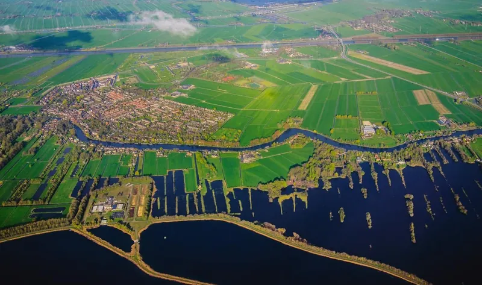

The Court of Audit on industrial discharges: we know too little to adjust course
“Industrial discharges: we know they are a problem. But what exactly is being discharged, by whom and with what effect — that picture is largely missing.”
Introduction
In March 2026 the Netherlands Court of Audit (Algemene Rekenkamer) published its report Focus op industriële lozingen (Focus on industrial discharges). It is neither a political pamphlet nor an indictment, but a factual study of the current state of inspection of industrial discharges into surface water in the Netherlands. Its conclusions are soberly worded — and all the more striking for it.
The Netherlands does not meet European water quality standards. That in itself is not news. But the Court of Audit brings out something less well known: it is not only water quality that falls short, but also insight into exactly what ends up in that water. There is no complete picture. And without it, taking targeted corrective action is very difficult.
This article summarises the main findings and explains why better information is key for anyone responsible for cleaner water.

WFD 2027: a deadline drawing near
Since 2000, the European member states have been legally bound by the Water Framework Directive (WFD). The aim is clear: all surface waters must achieve good chemical status — by 2027 at the latest. That deadline is not optional. Member states that fall short risk legal sanctions from the European Commission.
The reality is less encouraging. In 2025, 97% of Dutch surface waters did not meet the WFD standards for chemical quality. According to the Court of Audit, it is unlikely that the Netherlands will still manage to meet those objectives by 2027.
This has direct consequences for society. Around 40% of Dutch drinking water comes from surface water — the Rhine, the Meuse and the IJsselmeer. In recent years, drinking water intake from the Meuse has had to be halted several times because concentrations of pollutants were too high. In 2025 the Dutch environmental organisation Natuur & Milieu estimated that industrial pollution costs the Netherlands at least 7 billion euros a year.
Stagnation, not progress
To establish whether water quality is improving or deteriorating, the Court of Audit did something the regular reports do not: it analysed the historical trend in the concentrations of the substances themselves, independently of the standards, which keep changing.
For 15 substances typically associated with industry — including PFAS (PFOS), PAHs, mercury, lead, nickel and dioxins — regression analyses were carried out on data from 61 monitoring points in the national waters over the period 2012–2024. The picture that emerges:
- For 1 substance, most monitoring points show an improving trend.
- For 3 substances, the situation is deteriorating at most locations.
- For 9 substances, there is stagnation: no improvement, but no deterioration either.
- For 2 substances, there are too few measurements to draw conclusions.
At almost all of the 61 monitoring points, there is an exceedance of environmental quality standards (EQS) for at least one substance. For mercury, concentrations at most locations are rising as well. It is a concrete example of a substance whose trend is moving in the wrong direction.

No complete picture: the heart of the problem
Perhaps the Court of Audit’s most significant finding concerns not water quality itself — but the lack of an overview of discharges.
Rijkswaterstaat (RWS) manages the discharge permits for some 720 companies that discharge into national waters, including around 183 large IPPC installations. Yet there is no central data system that brings together companies, permits, permitted quantities and actual discharges. For its own study, the Court of Audit had to merge several Excel lists that were inconsistent with one another.
This has direct consequences for inspection and enforcement:
Permits are falling out of date. RWS’s standard is for permits to be reviewed every 4 to 8 years. For 44% of IPPC permits, the date of the last review is unknown. At least 8% are known to have last been assessed more than 8 years ago. In 2024 the European Commission opened an infringement procedure against the Netherlands for failing to review permits periodically.
Discharges barely show up in the emissions data. Companies are required to report emissions, but only when they exceed reporting thresholds. Of the 183 IPPC companies, only 17% have recent discharges to water registered in the emissions database. The other 83% probably do discharge, but below the thresholds — and nowhere are those small discharges added up.
Sampling is incomplete. RWS takes samples at companies, but half of the companies on the permit list cannot be found in the sampling data. Moreover, by no means all priority substances are measured at each company — only those named in the permit. Anything a company discharges beyond its permit therefore remains out of view.
Inspections cannot be shown to have taken place. RWS uses a permitting, inspection and enforcement system (Powerbrowser), but the data quality is poor: regions do not fill in the system consistently, and some inspectors keep their own Excel files. Almost half of the companies cannot be found in the inspection data. Whether they have in fact not been visited cannot be established.
Not a matter of blame, but of the task ahead
The Court of Audit has deliberately carried out this study without passing judgement or making recommendations — which is characteristic of a focus study. And rightly so. The situation is the result not of ill will, but of structural complexity.
Inspection of industrial discharges is fragmented across several public authorities: RWS for the national waters, water authorities for the regional waters, and provincial authorities and environmental agencies for indirect discharges. Companies cut across these boundaries — and data exchange between all these parties is limited.
In the summer of 2025, RWS itself carried out a critical internal evaluation. That evaluation confirmed the picture painted by the Court of Audit: a backlog in permit reviews, inadequate information systems and the absence of a national strategy.
It is also worth bearing in mind that water management involves more than industrial discharges alone. Agriculture, transport, wastewater treatment and cross-border pollution all play a part. The chemical quality of the Rhine as it enters the Netherlands at Lobith is already partly shaped by activities in Germany.
But it is precisely because the problem is so multifaceted that an overview becomes so crucial.
What is missing: both an overview and structured implementation
The Court of Audit notes that the minister is responsible for the permitting, inspection and enforcement system. That system works best when it is risk-based and information-driven. That means knowing which companies discharge what, what risks this poses to waterbodies downstream, and whether inspection of those companies is up to standard.
But an overview alone is not enough. The Court of Audit shows that information is fragmented — across systems, registers and spreadsheets, and across regions and units. Even where that information is available, it is not consistently translated into action. Inspectors keep their own lists. Risk analyses are not aligned with the permit lists. There is no national annual plan and no shared set of priorities.
That is the second gap, alongside the information gap: the implementation gap. Knowing which companies pose a risk is the first step. But that insight must also lead to an implementation cycle that can be planned and demonstrated — which company is scheduled for this year, what has been done, what was the outcome, and how does that relate to the WFD objectives downstream?
That connection — from risk analysis to structured implementation to demonstrable results — is currently missing across the board. And it is precisely the link needed to turn good intentions into real improvement.
These findings are part of a wider pattern that the Court of Audit itself has identified: in 54 earlier studies of inspection and enforcement, poor information exchange emerged as a recurring problem. But the solution is not just better data — it is a way of working that turns data into action that can be planned and repeated.
Conclusion
The Court of Audit’s report paints a clear but urgent picture: the Netherlands is lagging behind on the WFD objectives, water quality is barely improving, and insight into industrial discharges is incomplete. Not because nobody is making an effort, but because the information available to the authorities involved is simply inadequate — and because translating that information into structured implementation is by no means a given.
The 2027 deadline is closer than it seems. And the only way to take targeted corrective action in the time that remains is to know where the greatest risks lie — and then to act in a structured and verifiable way. Which companies should be prioritised this year? What has been done, and with what result? How does inspection of individual dischargers translate into the quality of the waterbody downstream?
That calls for more than a better database. It calls for a way of working in which risk analysis, planning and implementation are linked — and in which every step is traceable. Not as a bureaucratic end in itself, but as a precondition for being in control, for accountability and, ultimately, for achieving results.
An overview is the precondition for action. Structured implementation is the precondition for results. Without both, the task of achieving cleaner water remains what it is now: urgent, acknowledged — and not sufficiently in view.
This article is based on the Netherlands Court of Audit report “Focus op industriële lozingen” (Focus on industrial discharges), published in March 2026.